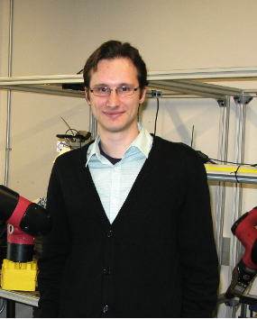
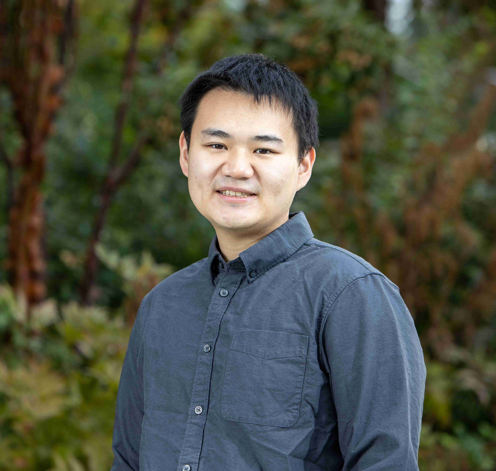
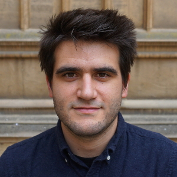
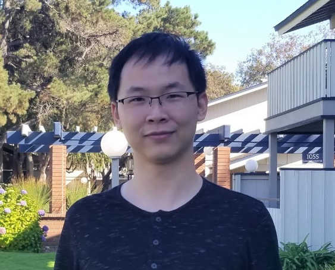

The 1st International Workshop on Safe Reinforcement Learning Theory and its Applications
Registration Deadline: Sep 18, 2022
RegistrationThe 1st international workshop on Safe Reinforcement Learning Theory and its Applications is co-located with the 2022 IEEE International Conference on Multi-sensor Fusion and Integration (MFI 2022). It will be held hybrid, the physical venue will be at Cranfield University in the United Kingdom, September 21, 2022.
Developing reinforcement learning (RL) algorithms that satisfy safety constraints are becoming increasingly important in real-world applications, which has received substantial attention in recent years. Many methods and algorithms have been proposed and developed for Safe RL, however, how to ensure safety during deploying RL methods in real-world applications and how to develop safe RL in the future still need further discussion. It’s necessary to organize the Safe RL Workshop and discuss how to address safe RL problems with researchers from academia and industry.
We welcome the researchers and students who are interested in safe RL to join us! To receive relevant workshop information in time, please click the following link to register.



